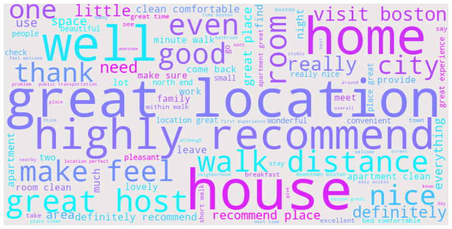

| comments | neg | neu | pos | compound | sentiment | number_char | number_words | |
|---|---|---|---|---|---|---|---|---|
| 0 | fantastic place week boston great location mur... | 0.038 | 0.563 | 0.399 | 0.9769 | Neutral | 325 | 50 |
| 1 | great location apartment would definitely | 0.000 | 0.306 | 0.694 | 0.7783 | Positive | 41 | 5 |
| 2 | apartment neat clean accurately show easy work... | 0.000 | 0.479 | 0.521 | 0.9781 | Positive | 250 | 34 |
Unable to display output for mime type(s): application/vnd.plotly.v1+jsonpv
The Top 10 most frequent words of all guest review contains words such as clean, great, nice, comfortable etc which reveals how much positive words are beign used by guest.
nw
The top 10 most Frequenct words used by guests for the review of their host overall service contains positive words such as clean, great, nice, also neutral words such as location, room, host, apartment etc. in addtion guests majorly used neutral words than positive words and negative words.

Unable to display output for mime type(s): application/vnd.plotly.v1+jsonpv
Using a selected number of positive and negative words shows that a greater percentage of guest consider their accomodation to be clean, convinient and recommendable rather than dirty, poor or bad.
nv
Trying to ascertain the number of times the selected positive and negative words were used by guests in their review, as shown by the summary bar chart 33.2% of guest used the clean while just 0.6% of guests used the word dirty, also 8.8% used the word convient while just 0.18% used the word poor.
Unable to display output for mime type(s): application/vnd.plotly.v1+json| word | count | percentage | |
|---|---|---|---|
| 0 | great location | 3159 | 7.33 |
| 1 | clean location | 232 | 0.54 |
| 2 | awesome place | 89 | 0.21 |
| 3 | excellent neighborhood | 24 | 0.06 |
| 4 | fantastic location | 251 | 0.58 |
| 5 | convenient location | 469 | 1.09 |
Unable to display output for mime type(s): application/vnd.plotly.v1+jsonpv
Looking at the positive bigrams of guests review, The above plot conveys the number of times each pair of words is used to describe the property location, guest intention to recommend the host service property to other people, the host personality traits and the accommodation overall tidyness.
nw
Looking at the positive bigrams of various guests review,
| host_id | word | frequency | |
|---|---|---|---|
| 0 | 1683708 | boston | 14 |
| 1 | 1683708 | great | 13 |
| 2 | 1683708 | north | 12 |
| 3 | 1683708 | end | 12 |
| 4 | 1683708 | place | 9 |
| ... | ... | ... | ... |
| 13799 | 13424353 | great | 3 |
| 13800 | 13424353 | place | 3 |
| 13801 | 13424353 | walk | 3 |
| 13802 | 13424353 | clean | 3 |
| 13803 | 13424353 | around | 3 |
13804 rows × 3 columns
[3637081, 324630, 3474193, 119019]Unable to display output for mime type(s): application/vnd.plotly.v1+json| Sentiment | Minimum | Average | Median | Maximum | |
|---|---|---|---|---|---|
| 0 | Negative | 1 | 1.571 | 1.0 | 9 |
| 1 | Neutral | 1 | 18.684 | 6.0 | 729 |
| 2 | Positive | 1 | 15.186 | 6.0 | 487 |
The highest number of closely related negative reviews by a host is 10, while for positive reviews is 505. Also the average number of neutral review for all host is 16.1 while 1.57 is the average number of negative review by host.
The highest number of negative review a single host received is 10, while the highest number of positive reviews is 505, additionally the average number of neutral reviews for all host is 16.1 while 1.57 is the average number of negative review by host.
| host_id | bi_gram | frequency | |
|---|---|---|---|
| 0 | 1683708 | north end | 12.0 |
| 1 | 1683708 | would definitely | 4.0 |
| 2 | 1683708 | highly recommend | 3.0 |
| 3 | 1683708 | location apartment | 3.0 |
| 4 | 1683708 | freedom trail | 3.0 |
| ... | ... | ... | ... |
| 13813 | 13424353 | whole experience | 1.0 |
| 13814 | 13424353 | experience easy | 1.0 |
| 13815 | 13424353 | easy apartment | 1.0 |
| 13816 | 13424353 | apartment spotless | 1.0 |
| 13817 | 13424353 | spotless comfortable | 1.0 |
13818 rows × 3 columns
Unable to display output for mime type(s): application/vnd.plotly.v1+jsona simple exploration of host with the highest number of guest reviews on how likely they are to recommend the host service, their experience with the service property and its environs, the host and also the comfort of the accomodation.
Focusing on positive bi-gream from guest reviews, based on the top 10 hosts with the highest number of time each group of wards were used to review their services, Host Jose/Jason have a high number of positive guest review relating to Great Location & Highly Recommend which indicate some of its biggest strength of being in a vary good location, soledad & Rodrigo had the second highest count of reviwes with Highly Recommend & Clean Comfortable with 41 and 40 respectively while also comming 5th with Great Host. We also have other repeated hosts such as Will, Robert, Ravi, Dror & Izzy
| host_id | comments | host_location | |
|---|---|---|---|
| 0 | 1683708 | fantastic place week boston great location mur... | North End, Boston |
| 6 | 9189449 | great place ... super warm home super cold win... | Allston-Brighton, Boston |
| 28 | 38352201 | day apartment perfect nice note bottle wine ho... | Charlestown, Boston |
Unable to display output for mime type(s): application/vnd.plotly.v1+jsonAnd finally a simple exploration of host with the highest number of guest reviews on how likely they are to recommend the host service, their experience with the service property and its environs, the host and also the comfort of the accomodation.
The above … shows the number of guest reviews containing the selected words within the top 10 host locations. Jamaica Plain have the highest number of host willing to book again, while Fanway/Kenmore have the highest count of guest who enjoyed the host environment.
Change the host id to host name in host one word & sentiment chart.
website navbar: background: primary left: - text: “Host Analysis” file: index.qmd - text: “Guest Review” file: review.qmd page-navigation: true